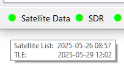

Satellite Data
Data Sources
SkyRoof obtains satellite date from several sources:
SatNOGS DB is the main source of satellite data. It is a frequently updated, crowd-sourced dataset that contains detailed information about all satellites transmitting in the Ham bands;
JE9PEL Satellite List is another dataset with information about the satellites, maintained by Mineo Wakita JE9PEL, that, in particular, includes the callsigns of the satellites. SkyRoof also mines the JE9PEL mode descriptions to fill in the signal parameters that SatNOGS leaves blank.
LoTW - The ARRL LoTW service accepts satellite QSO only if the satellite abbreviation is one of those published on their web site. These abbreviations are stored in a file in the Data folder, you can view them in the Satellite Details window.
AMSAT Live OSCAR Satellite Status Page accepts satellite observations with their own satellite abbreviations, these abbreviations are stored in a file in the Data folder.
Signal Parameters
To decode a satellite's telemetry, SkyRoof needs the modulation, baud rate, and framing of its downlink. These are resolved for each transmitter from several sources, in order of priority:
- your manual overrides (see below);
- the gr-satellites database;
- the JE9PEL satellite list;
- the SatNOGS DB transmitter description.
The first source that specifies a given parameter wins, so a higher-priority source fills in only what the lower-priority ones leave unknown. The resolved values appear in the mouse tooltip of the transmitter on the Frequency Scale.
Overriding Signal Parameters
When the automatic sources are wrong or incomplete, you can correct them in the transmitters-override.json file in the Data folder. Each entry is keyed by the transmitter UUID and lists only the fields to change, for example:
{
"FdxJrwmqFrJnP3sd96Bip8": {
"satellite": "SITRO-AIS-56", "norad": 59778,
"modulation": "GMSK", "baudrate": 2400, "framing": "USP"
}
}
SkyRoof ships a default copy of this file and refreshes it as new corrections are published. To keep
your own edits from being overwritten, add "read_only": true to the entry — SkyRoof then never
replaces it. Entries you add that are not in the shipped file are always kept.
The telemetry definition files in the TelemetryRegistry folder work the same way: add
"readOnly": true (camelCase, to match those files' key style) to a definition to keep your edits when
SkyRoof updates its bundled definitions.
Orbit Elements (OMM / TLE)
SkyRoof accepts both modern CCSDS OMM orbit elements and traditional TLE data. CelesTrak OMM CSV is the highest-priority automatic source by default. OMM CSV/JSON is propagated directly through SGP4 and is not converted back to the legacy 69-column TLE representation, so newer six-digit NORAD catalogue numbers remain usable.
Automatic orbit sources are applied from lowest to highest priority:
- the original SatNOGS TLE source;
- the built-in AutoTLE source;
- Manual Orbit Source URLs configured by the operator (first entry has the highest priority within this group);
- CelesTrak OMM CSV.
These URLs are exposed under Tools / Orbit / TLE Sources / Edit Source URLs in Orbit / Ephemeris Sources. The default CelesTrak source is the amateur GP/OMM CSV feed. Manual Orbit Source URLs may point to HTTP(S) URLs or local files and may contain traditional 2-line/3-line TLE text, SatNOGS-style JSON, CelesTrak/CCSDS OMM JSON, or OMM CSV.
Temporary manual-file priority
Tools / Load Orbit Elements From File imports CSV, JSON, or TXT files. A manual file import temporarily moves the imported objects above every automatic source, including CelesTrak. That manual priority lasts for exactly 3 days (72 hours) from the import time.
Automatic downloads continue to refresh underneath the manual layer. When the 72-hour window expires, SkyRoof releases the manual priority automatically and immediately returns each object to its latest automatic orbit, normally the CelesTrak OMM CSV value. This expiration is persisted, so closing and reopening SkyRoof does not restart the three-day timer.
The supported manual-file formats are:
- OMM CSV from CelesTrak/CCSDS;
- OMM JSON from CelesTrak/CCSDS;
- SatNOGS JSON TLE records;
- traditional 2-line or 3-line TLE text.
Orbit-only objects that do not exist in the SatNOGS transmitter database can still be created as tracking-only targets. This does not create or modify transmitter records.
The active orbit source and element epoch are shown in the satellite details/tooltip. While a manual-file layer is active, the tooltip also shows when its temporary priority expires.
JPL Ephemeris Sources
Moon, Sun and Venus tracking uses a JPL/NAIF SPK kernel. DE440s is the default. SkyRoof ships no large BSP file; it downloads the selected kernel into the user data cache when needed.
The DE440s and DE421 download source lists are editable in the same Orbit / Ephemeris Sources settings section. Each default list contains two official NASA/JPL endpoints (NAIF first, SSD second), and SkyRoof tries them in order. Large-kernel downloads use a 15-minute HTTP timeout and show the same modal progress style as the satellite-data updater, including source number, bytes, percentage, and cancellation. You can remove, reorder or replace either URL, or use Load SPK/BSP From File for a local copy.
After a compatible DE440s/DE421 kernel is activated, Moon, Sun, and Venus are added as tracking-only objects and the managed Solar System group is immediately available in Satellites and Groups.
Automatic Updates
SkyRoof automatically downloads the satellite list every 7 days, and orbit-element data every 24 hours.
The mouse tooltip of the Satellite Data label on the status bar shows the last download time:

The light next to the label turns yellow if the satellite data are not up to date.
Manual Updates
In addition to automatic downloads, the data may be manually downloaded at any time using the Tools / Download All Satellite Data and Tools / Download Orbit Elements menu commands.
AMSAT Satellite Status
AMSAT Live OSCAR Satellite Status Page is a crowd-sourced, real-time Ham satellite status page.
Posting Status Data
You can post your satellite status observations the the AMSAT web site either by filling the submission form on their site, or using the right-click menu of the satellite labels on the Frequency Scale. A valid Ham callsign must be entered in the Settings window for this function to work.
Downloading Status Data
Set the Amsat Satellite Status / Enable option in the Settings window to true to enable automatic downloads of the
satellite status information from the AMSAT web site. The statuses are shown on the Current Group
panel, the green and red icons represent the active and inactive status respectively.
Satellite status data are downloaded once an hour. You can manually download it at any time using the Tools / Download AMSAT Statuses menu command.